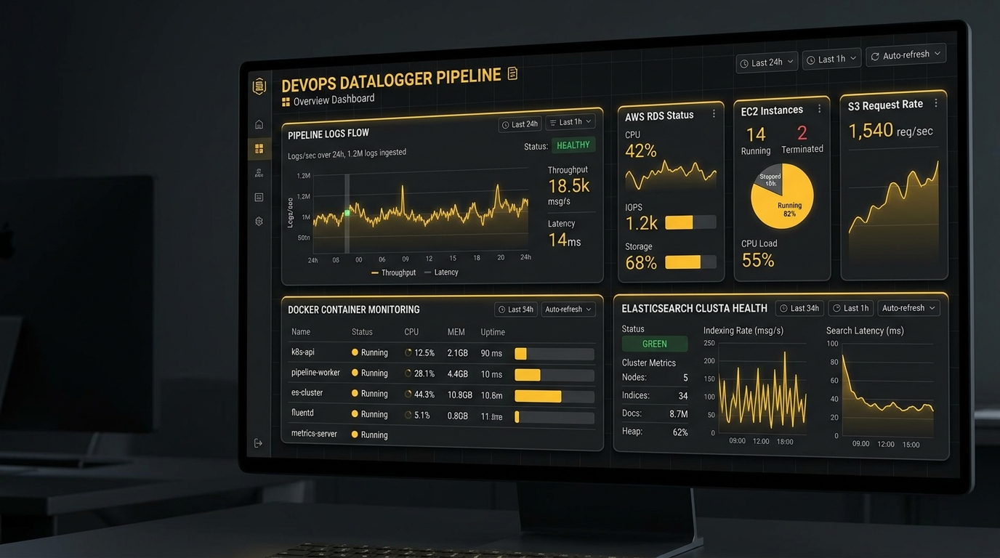
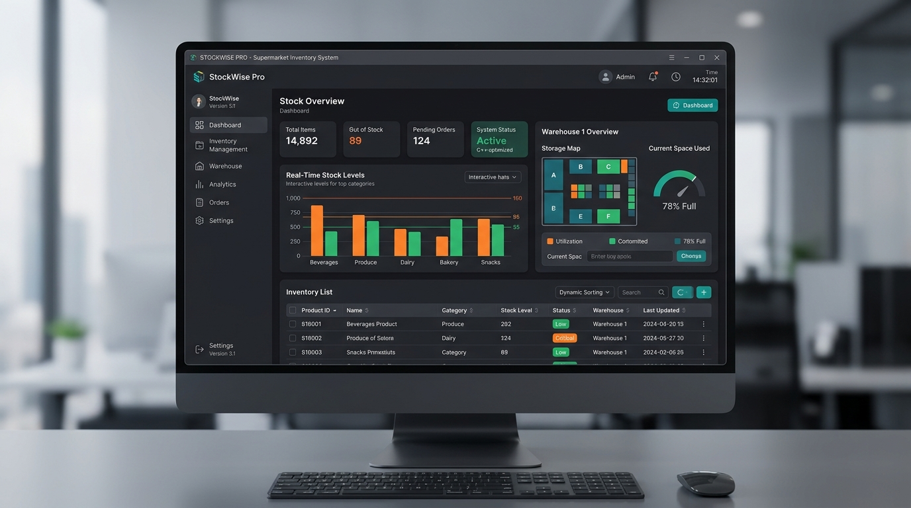
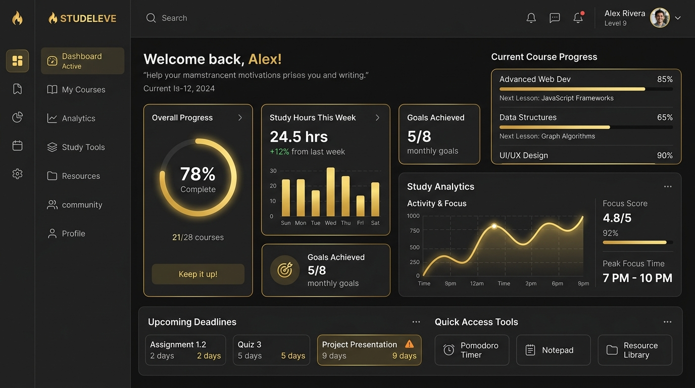

DevOps Datalogger Pipeline
Automated build pipeline deployed on an AWS EC2 instance. Configured Docker Compose, Nginx, Elasticsearch, and Kibana for robust system monitoring.
Hello, my name is
Building robust full-stack applications, automated cloud pipelines, and efficient system architectures.
Currently studying Computer Science at Carolina University. Blending a strong academic foundation in data structures and algorithms with hands-on experience in cloud infrastructure, system monitoring, and IT support. Serving as President of the Computer Science Club to foster technical growth and community.
Core engineering specialties, toolchains, and cloud environments:

Automated build pipeline deployed on an AWS EC2 instance. Configured Docker Compose, Nginx, Elasticsearch, and Kibana for robust system monitoring.

Custom graphical user interface application built entirely in C++, leveraging the Fast Light Toolkit (FLTK) for efficient, low-overhead inventory management.

A comprehensive UX case study and full-stack project designed to empower students through an intuitive, data-rich interface and semantic web design.
Initiate a dialogue for engineering roles, technical advisory, or cloud systems development.